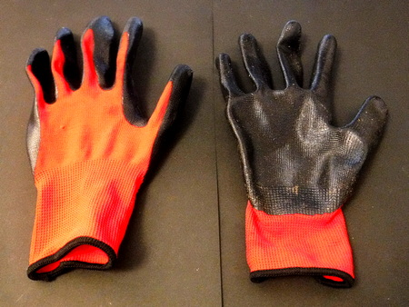

私のお気に入り
釣りの衣類 藪こぎ用厚手手袋
必要性
初めての渓流を訪れて、小径の無い所から渓に降りたり登ったりする時に、藪こぎを強いられることがあります。夏場はいろいろな草が生い茂っていて、中には凶悪なイバラもあり、素手では何かと痛いことがあるます。また、急斜面に手を付くので、泥や落ち葉で汚れます。
また、作者は皮膚が弱いので、カブレる植物に触れて、薬のお世話になることがよくあります。
そんな時に手を保護する手袋を買いました。
どんな製品が良いか
- イバラのトゲを通さないこと
- 通気性が良いこと
- 落としても見つけやすい色
- コンパクトになり、ズボンのポケットに楽に出し入れできること
- コストパフォーマンスが良いこと
ということで、最近は百円ショップの存在無しでは釣りが立ち行かなくなってきた作者ですので、さっそく近所のダイソーへ行きました。園芸コーナーにあったのが、手のひら部分が比較的厚手の軟質ゴム、手の甲はメッシュ素材という製品です。良く目立ちそうな赤色を買いました。

使用感
手のひらと指先の大部分が、黒いゴムでコーティングされており、イバラくらいなら直接握っても、トゲが刺さるようなことは無さそうです。ただ、タラの枝から出ているようなゴツいトゲでは貫通してしまうでしょう。
手の甲と、指の背の部分は、アクリルかポリエステルのメッシュで、通気性は良好です。色も鮮やかな赤・オレンジ系ですので、山の中に落としてもすぐに見つかると思います。
左右をペアで折りたたみ、ズボンのポケットに入れていますが、かなり小さくなるので携行には便利です。
ピアニスト.....とまでは行きませんが、PCのキーボードをカチカチ叩いて下手なプログラムを組んだり請求書を作るのが仕事なので、手は大事にしないと、と思って買いましたが、なかなかのコストパフォーマンスです。
ワークマンへ行けば、600～1,000円くらいでかなり良い品が買えます。それこそタラの凶悪なトゲでも大丈夫そうな手袋が豊富にラインナップされています。
転ばぬ先の杖、という諺もありますので、１組携行することをお勧めします。
私のお気に入り 目次へ
サイトマップ
ホームへ
お問い合わせ